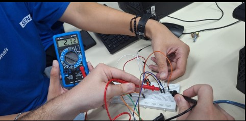
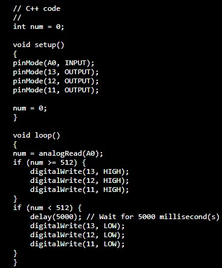
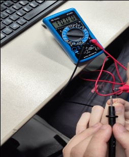
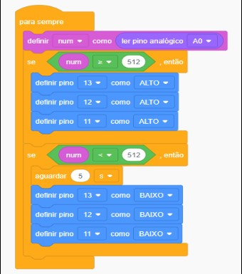
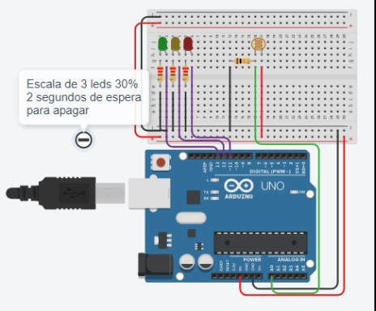

Montagem Prática

Código C++ na IDE do Arduíno

Filmagem do contorle de iluminação
Medidas Realizadas com o Multímetro

Conseguimos observar a medição do resistor de 10k, com as cores, Marrom, preto e laranja.
Ligação do LDR e de LEDs no Tinkercad

ㅤㅤㅤㅤㅤㅤㅤㅤㅤㅤㅤㅤㅤㅤㅤㅤㅤㅤㅤㅤㅤㅤㅤㅤ
ㅤㅤㅤㅤㅤㅤㅤㅤㅤㅤㅤㅤㅤㅤㅤㅤㅤㅤㅤㅤㅤㅤㅤㅤ
